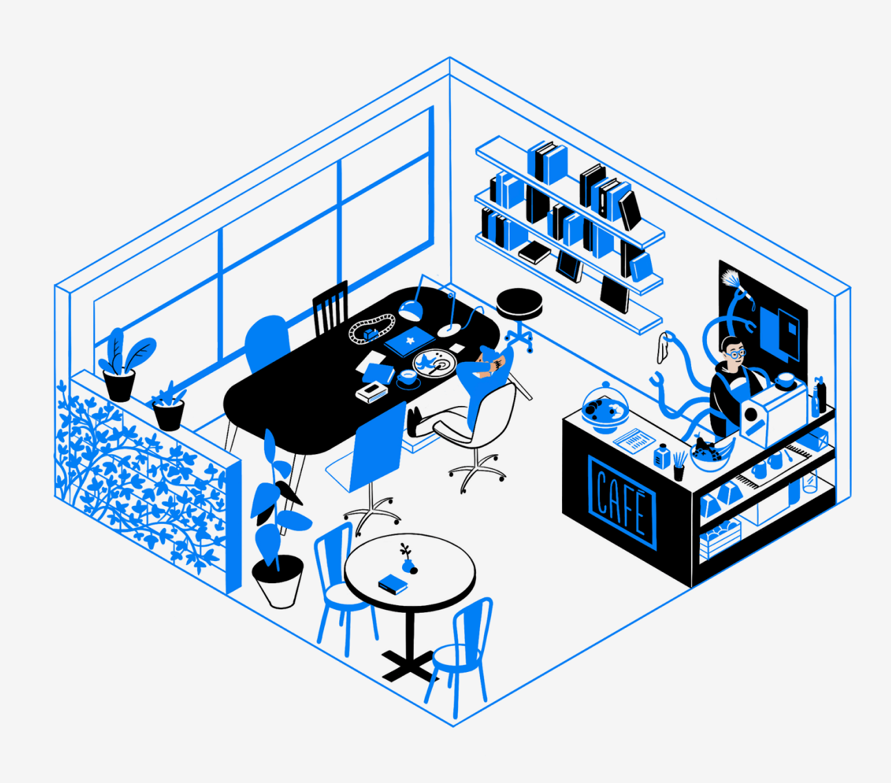

Recetas
Echa un vistazo a las recetas que hemos reunido para que elabores tus propios snacks.
Receta en Aeropress
~5 min
Receta en cafetera francesa
~15 min
¡Te damos la bienvenida a nuestra zona de estudio! Aquí tenemos café para darte energía y motivar tu creatividad.

Echa un vistazo a las recetas que hemos reunido para que elabores tus propios snacks.
Receta en Aeropress
~5 min
Receta en cafetera francesa
~15 min